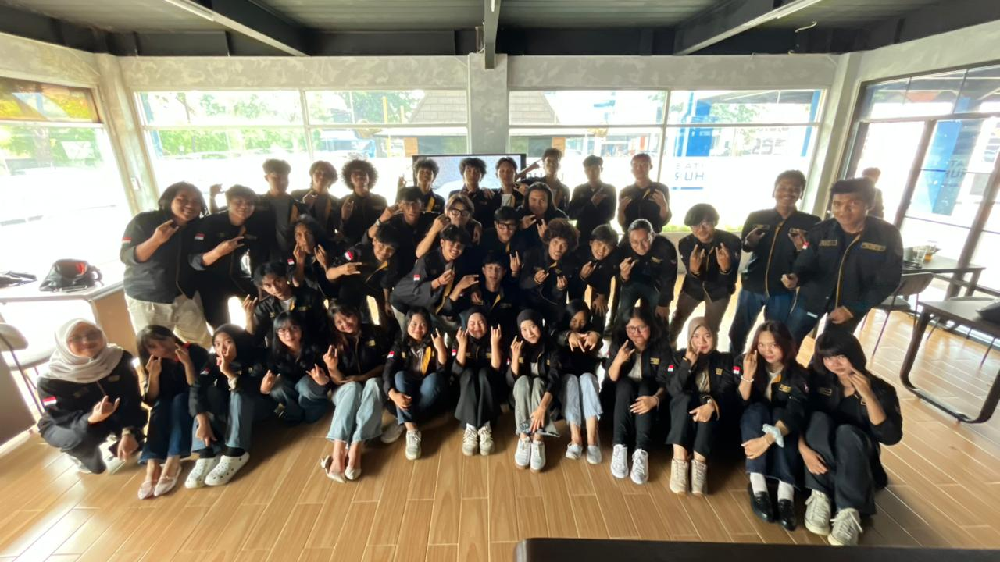
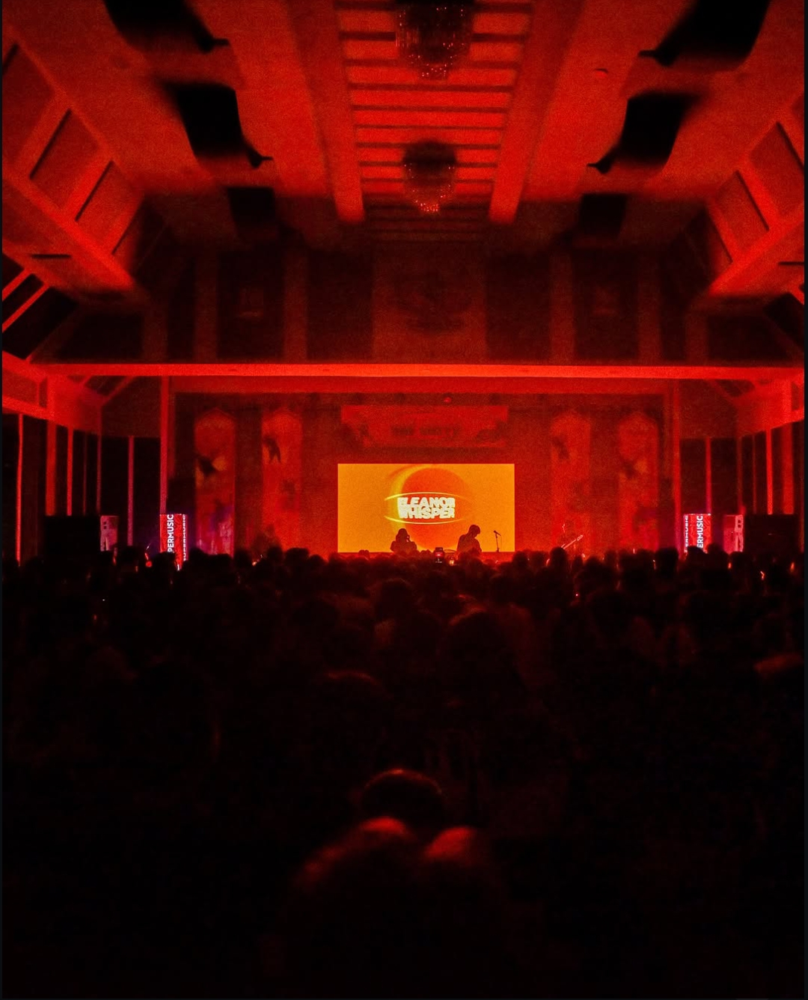

>
ORGANISASI
UKM Musik KMM Budi Luhur
Dokumentasi keikutsertaan saya dalam kegiatan UKM Musik.
Saya tertarik pada teknologi informasi, pengembangan website, dan digital entrepreneurship. Saya senang mempelajari ide baru dan mengubahnya menjadi solusi digital yang bermanfaat.
Perjalanan saya dalam bidang teknologi, organisasi, musik, dan pengalaman menjalankan sebuah acara.
Saya merupakan mahasiswa Sistem Informasi dari Universitas Budi Luhur. Saya memiliki ketertarikan pada teknologi informasi dan digital entrepreneurship. saya tertarik mempelajari serta mengembangkan sistem informasi,UI/UX dan website. Selain belajar di bidang akademik, saya juga aktif mengikuti kegiatan organisasi untuk menambah pengalaman, memperluas relasi, dan mengembangkan kemampuan bekerja sama dalam tim.
Saya merupakan bagian dari UKM Musik KMM Budi Luhur, sebuah unit kegiatan mahasiswa yang berfokus pada kegiatan musik. Melalui organisasi ini, saya mendapatkan pengalaman dalam kegiatan bermusik, bekerja sama dengan anggota lain, serta terlibat dalam pelaksanaan acara konser.
Beberapa dokumentasi sebagai bagian dari UKM Musik KMM Budi Luhur dan pengalaman dalam menjalankan konser.

>Dokumentasi keikutsertaan saya dalam kegiatan UKM Musik.

Dokumentasi pengalaman saya saat terlibat dalam pelaksanaan konser bersama UKM Musik KMM Budi Luhur.
Setiap tahap pendidikan menjadi bagian dari proses belajar dan perkembangan saya.
Sekolah Dasar
Membangun dasar pengetahuan, belajar bersosialisasi, dan mengembangkan kemampuan dasar sebagai bekal pendidikan selanjutnya.Sekolah Menengah Pertama
Mengembangkan pengetahuan akademik, kedisiplinan, tanggung jawab, dan kemampuan bekerja sama.Sekolah Menengah Atas
Memperluas wawasan dan mempersiapkan diri untuk melanjutkan pendidikan ke jenjang perguruan tinggi.Sarjana Komputer (S.Kom.) — Sistem Informasi
Mempelajari sistem informasi, proses bisnis, teknologi informasi, dan pengembangan solusi digital.Contoh proyek pembelajaran dan pengembangan sistem.
Website untuk memperkenalkan profil, proyek, dan materi pembelajaran.
Proyek pembelajaran aplikasi Android untuk mengelola data buku.
Konsep website pemesanan menu melalui QR untuk membantu proses pemesanan.
Silakan sesuaikan contoh proyek di atas dengan proyek yang benar-benar pernah kamu kerjakan.
Kumpulan materi dan pembelajaran mengenai dunia digital entrepreneurship.
Punya ide, pertanyaan, atau ingin berdiskusi mengenai teknologi dan bisnis digital? Silakan hubungi saya.
Kirim Email ↗ Ganti emailkamu@example.com dengan alamat email kamu.